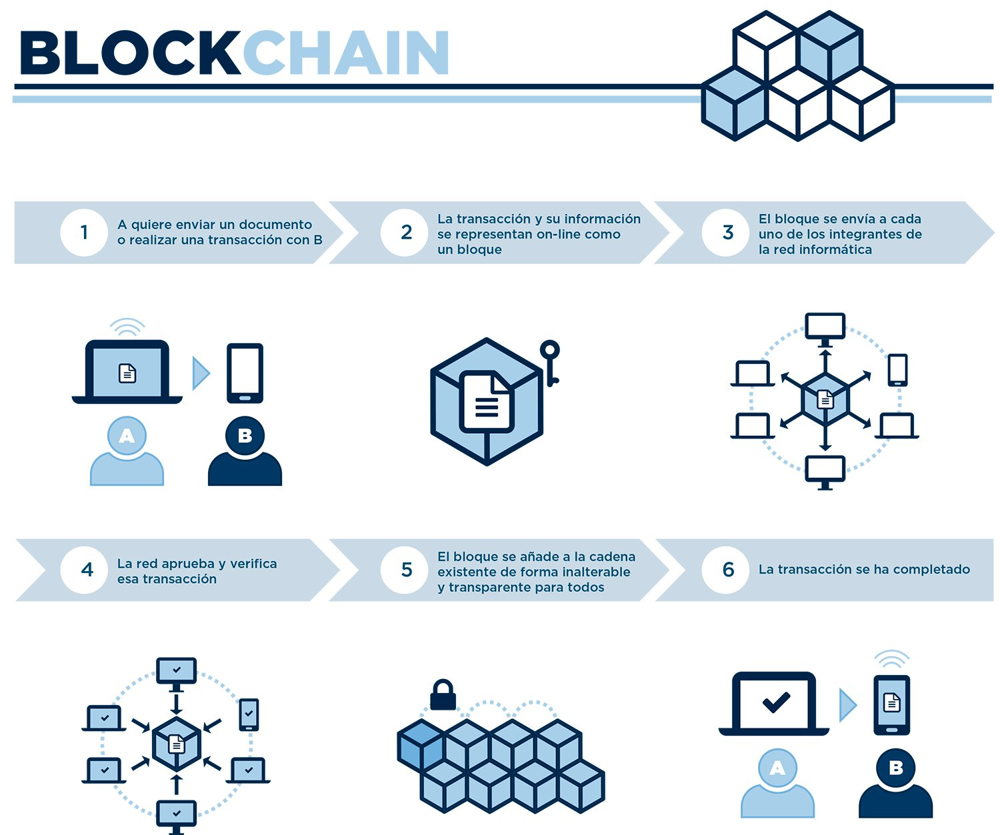

Básicamente, cualquier tipo de información que necesite ser preservada de forma intacta y que deba permanecer disponible puede ser almacenada en blockchain de manera segura, descentralizada y más económica que a través de intermediarios. Además, si esa información se guarda cifrada se puede garantizar su confidencialidad, ya que solo quien cuente con la llave de cifrado pueda acceder a ella. También puede revolucionar el mercado de Internet de las Cosas (IoT), donde el reto recae en los millones de dispositivos conectados a Internet que deben ser gestionados por las empresas proveedoras. En unos años, el modelo centralizado no va a soportar tantos dispositivos, sin contar que muchos de ellos no son lo suficientemente seguros. Con blockchain los dispositivos pueden comunicarse a través de la red de manera directa, segura y confiable, sin intermediarios. Blockchain permite verificar, validar, rastrear y almacenar todo tipo de información, desde certificados digitales, sistemas de votación democráticos, servicios de logística y mensajería, contratos inteligentes y, por supuesto dinero y transacciones financieras. Actualmente, ya existen proyectos vigentes que vale la pena investigar:
